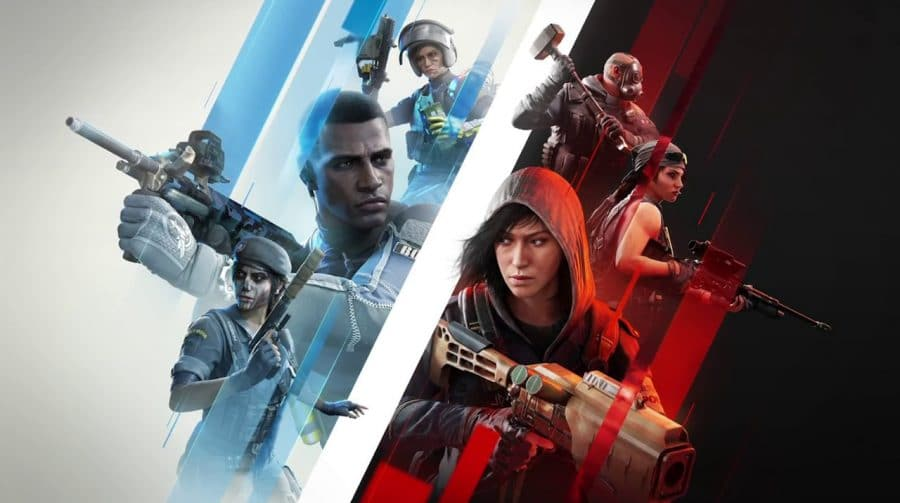
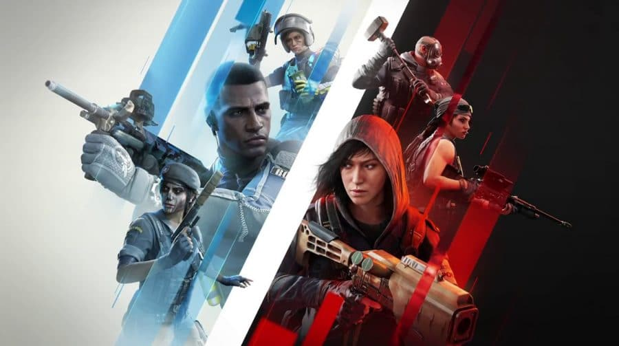

Rainbow Six Siege
Sobre:
Rainbow Six Siege é um jogo de tiro tático em primeira pessoa desenvolvido pela Ubisoft. Lançado em 2015, ele se destaca pelo combate estratégico baseado em operadores especializados. O jogo foca na destruição de ambientes, permitindo que os jogadores criem novas linhas de visão e abordagens inteligentes, tornando cada partida única e desafiadora.


Diferente dos shooters tradicionais, Rainbow Six Siege exige comunicação e trabalho em equipe. Cada rodada pode ser vencida com estratégias bem planejadas, uso inteligente de gadgets e conhecimento dos mapas. Os operadores possuem habilidades únicas, como drones, armadilhas e explosivos, que tornam a jogabilidade dinâmica e imprevisível, criando situações táticas variadas a cada confronto.


O jogo oferece um sistema de operadores, divididos entre atacantes e defensores. Os atacantes devem invadir e completar objetivos, enquanto os defensores protegem a área. Com uma grande variedade de personagens, cada jogador pode escolher um estilo de jogo que se adapta melhor à sua estratégia, seja agressiva, furtiva ou voltada para suporte à equipe.
 

A destruição de cenários é um dos diferenciais de Rainbow Six Siege. Paredes, tetos e pisos podem ser destruídos para criar novas oportunidades de ataque ou defesa. Isso força os jogadores a se adaptarem rapidamente, utilizando cada detalhe do ambiente a seu favor. O conhecimento dos mapas e suas estruturas é essencial para alcançar a vitória.
O jogo conta com um sistema de ranqueamento competitivo, onde os jogadores são avaliados com base em seu desempenho. Cada temporada traz novas atualizações, operadores e ajustes de balanceamento. Isso mantém o jogo sempre dinâmico e competitivo, garantindo que a comunidade permaneça ativa e interessada nas novidades que a Ubisoft introduz regularmente.
Além do modo competitivo, Rainbow Six Siege oferece eventos sazonais e modos de jogo alternativos. Esses eventos introduzem novas mecânicas temporárias, cosméticos exclusivos e desafios diferenciados. Isso mantém o jogo fresco e atrativo, permitindo que os jogadores experimentem novas abordagens sem comprometer a essência tática do game.
A Ubisoft investe fortemente na cena de eSports de Rainbow Six Siege. O jogo possui torneios de alto nível, como o Six Invitational e a Pro League, reunindo as melhores equipes do mundo. Esses campeonatos contam com premiações milionárias e atraem um grande público, consolidando Siege como um dos principais jogos competitivos da atualidade.